Path
When the Moon covers the Sun
An eclipse lasts a few hours. Totality, a few minutes.
This guide walks through what happens between one and the other: why it happens, what is seen, and how to watch it without harming your eyes.
Five stops: what it is, why it happens, types, what is seen, and how to watch.
Stop 1 of 5 · What a solar eclipse is
The Moon steps in between
A solar eclipse happens when the Moon passes between the Sun and the Earth and, from some places, covers part of the Sun or the whole disc.
It can only happen at new moon. It is the only phase in which the Moon is on the Sun's side.
The Moon casts a shadow that sweeps across the Earth. Whoever is inside that shadow sees the eclipse; whoever is outside does not.
That is why a total eclipse is local: the band of totality is at most a few hundred kilometres wide. In 1991, over Mexico, it was about 258 km.
Stop 2 of 5 · Why it happens
The coincidence
The Sun is about 400 times wider than the Moon, and about 400 times farther away.
That is why, seen from Earth, the two discs look almost the same size in the sky.
Diameter of the Sun: about 1.39 million km. Diameter of the Moon: about 3,475 km. Ratio: about 400. Mean distance to the Sun: about 149.6 million km. Mean distance to the Moon: about 384,400 km. Ratio: about 390.
A coincidence that changes
The distance to the Moon varies on every orbit: from about 363,000 km at perigee to about 405,000 km at apogee.
Near, the Moon can cover the Sun. Far, it cannot.
That difference decides whether an eclipse is total or annular (stop 3).
The window closes
The Moon drifts away a few centimetres each year.
It is measured by bouncing lasers off the reflectors left by the Apollo missions: about 3.8 cm per year.
When total eclipses will stop depends on long-term models.
Why there is no eclipse every month
The Moon's orbit is tilted about 5.1° relative to the Earth's orbit.
Almost every month, the new moon passes a little above or a little below the Sun. Its shadow does not touch the Earth.
To learn more
The nodes
The two orbits cross at two points: the nodes.
If the new moon happens near a node, within about 17° or less, there is a solar eclipse somewhere on Earth.
Eclipse seasons
The Sun takes about 34.5 days to cross the eclipse zone around each node. That is an eclipse season.
Each season always has at least one solar eclipse, and sometimes two.
Seasons repeat every 173.3 days, almost twice a year. That is why there are between 2 and 5 solar eclipses each year.
The saros
Every 18 years, 11 days and 8 hours, the Sun, the Moon and the nodes return almost to the same position. That cycle is the saros: 223 lunations, about 6,585.3 days.
Two eclipses separated by one saros are alike: same node, similar lunar distance, same time of year.
The leftover 8 hours matter. In that time the Earth turns a third of a turn. Each eclipse in the series falls about 120° farther west.
The total eclipse that crossed Mexico on 11 July 1991 and the one of 2 August 2027 belong to the same family: saros 136.
A saros series lasts between about 1,200 and 1,550 years and contains 69 to 87 eclipses.
Sources: F1 · F2 · F3 · F4 · F5 · F6 · F12 · F13 · F14 · F15
Stop 3 of 5 · The types of eclipse
Three shadows
The Moon casts three zones of shadow:
- Umbra: full shadow. There the Moon covers the whole disc of the Sun.
- Penumbra: partial shadow. There the Moon covers only part of it.
- Antumbra: beyond the tip of the umbra. There the Moon looks smaller than the Sun, in silhouette against it.
Total
The umbra touches the Earth. The Moon is close enough to cover the whole Sun.
The longest possible totality is about 7 min 32 s. The longest between the years −1999 and 3000 will be that of 16 July 2186: 7 min 29 s.
Annular
The antumbra touches the Earth. The Moon is too far away and a ring of Sun remains.
Hybrid
The same eclipse looks annular in some stretches of its band and total in others. The curvature of the Earth brings the surface closer to the tip of the shadow.
It is the rarest type: 4.8 % of solar eclipses between −1999 and 3000.
Partial
Only the penumbra touches the Earth. Nowhere is the Sun completely covered.
Every total or annular eclipse looks partial outside its band.
In an annular eclipse it is never safe to look without a filter: there is no totality.
Stop 4 of 5 · What is seen and when
Four contacts
A total eclipse is counted in four contacts:
- C1: the Moon touches the edge of the Sun. The partial phase begins.
- C2: the Moon covers the last piece of the Sun. Totality begins.
- C3: the first piece of the Sun appears. Totality ends.
- C4: the Moon leaves the disc. The eclipse ends.
In an annular eclipse, C2 and C3 mark the start and end of the ring. The partial phases usually last more than an hour on each side.

From C1 to C2: the crescent
The Sun becomes a thinner and thinner crescent. At first, it is hardly noticeable.
Under a tree, the shadows of the leaves fill with tiny crescents: each gap works as a pinhole.
The light turns strange
In the last minutes, the light dims and turns metallic. The shadows sharpen.
The temperature drops. In a total eclipse, the air near the ground usually cools by 2 to 5 °C, and the minimum comes shortly after totality; with clouds, the drop is smaller.
Flying shadows
One or two minutes before and after totality, faint bands of light and shadow can appear, racing over the ground or a pale wall.
The most accepted explanation is scintillation: the turbulent atmosphere distorts the light of an already very thin crescent. It is still debated; they are not always visible.
Baily's beads
Just before C2, the last thread of Sun breaks into points of light. It is light passing through the valleys on the Moon's edge.
They are named after Francis Baily.
Diamond ring
One single, very bright bead remains, next to a faint halo: a ring with its diamond. It happens on entering C2 and happens again at C3.
The diamond is still direct Sun. It is watched with a filter (stop 5).
The corona
It is the Sun's outer atmosphere. It is only visible to the naked eye during totality.
It is white, with plumes and wings that change from one eclipse to another. It reaches about 2 million °C.
Chromosphere and prominences
At the start and end of totality, at the edge of the Moon, a very thin red arc appears: the chromosphere.
Above it, prominences can be seen: tongues of red plasma held up by magnetic fields.
The red comes from hydrogen light (Hα line, 656.3 nm). It is the project's red.
The sky and the horizon
The planets above the horizon and the brightest stars can be seen.
Around the whole horizon a band of light remains, like a sunset all the way round: it is the zone outside the umbra, where the eclipse is still partial.
Which planets are visible depends on each eclipse.
Animals
Many animals respond. In a zoo in South Carolina, in 2017, about three quarters of the observed animal groups changed their behaviour: dusk routines or signs of unease.
Not all of it is the eclipse: light, temperature and the noise of the crowd also count.
From C3 to C4: the return
Everything happens in reverse: diamond ring, beads, flying shadows, the crescent that grows.
Many people stop looking here. The eclipse continues for more than an hour.
Totality. The day is deceived: the planets, the brightest stars and the corona appear.
Stop 5 of 5 · When and how to look
The rule
Only inside totality, and only within its band, can you look without a filter. Before and after, never.
Before and after: always with a filter
To look directly you need solar filters that meet the international standard ISO 12312-2.
Looking at the Sun without a filter, even when it is nearly covered, can damage the retina. The damage does not hurt, symptoms can take hours to appear, and it can be permanent.
When to remove the filter
Only when the Moon completely covers the bright face of the Sun and it suddenly darkens.
Simple test: if no part of the Sun is visible through the eclipse glasses any more, it is totality.
When to put it back on
As soon as the bright Sun starts to reappear. That is: with the first flash of the final diamond ring (C3).
In an annular or partial eclipse there is no safe moment without a filter.
What to watch with
Glasses and viewers
- Buy from manufacturers listed by the American Astronomical Society (AAS). It is not enough for the box to say ISO.
- Inspect them before use. If they are scratched, punctured or broken, throw them away.
- Children must always be supervised while using eclipse glasses.
- If you wear glasses, keep them on and put the eclipse glasses over them.
Binoculars, telescopes and cameras
Only with a solar filter mounted at the front of the instrument.
Never look through an instrument without a filter while wearing eclipse glasses: the concentrated light breaks the filter and enters the eye.
Filters that screw into the eyepiece are dangerous and should be discarded.
Pinhole projection
You do not need to look at the Sun to see the eclipse.
With the Sun at your back, a small hole projects its image onto the ground or a sheet: a punctured card, a colander, crossed fingers or the leaves of a tree.
Watch the projection. Never through the hole.
What must never be used
- Sunglasses, however dark they are.
- Smoked glass, X-rays and film negatives.
- Automatic or adjustable welding helmets.
- Binoculars, telescopes or cameras without a solar filter at the front.
They let through a lot of invisible infrared light that burns the retina. The Sun looking faint or not bothering you guarantees nothing.
A fixed welding helmet does work if its shade is 12 or higher; 13 or 14 are the most comfortable.
Closing
The next window: 2 August 2027
The next total eclipse is on 2 August 2027. At its point of greatest duration, totality lasts 6 min 23 s.
Source: F13.
Sources
Agencies
- F1 Espenak, F. y Meeus, J. (2006). Five Millennium Canon of Solar Eclipses: −1999 to +3000. NASA Technical Publication NASA/TP-2006-214141. NASA Goddard Space Flight Center. eclipse.gsfc.nasa.gov
- F2 Espenak, F. «Periodicity of Solar Eclipses». NASA GSFC Eclipse Web Site. eclipse.gsfc.nasa.gov
- F3 Espenak, F. «Eclipses and the Moon's Orbit». NASA GSFC Eclipse Web Site. eclipse.gsfc.nasa.gov
- F4 NASA NSSDCA. «Moon Fact Sheet». nssdc.gsfc.nasa.gov
- F5 International Astronomical Union. Resolution B2 (2012): astronomical unit = 149,597,870,700 m. Resolution B3 (2015): nominal solar radius = 695,700 km.
- F6 NASA Science. «Sun: Facts». science.nasa.gov
- F7 NASA Science. «Types of Solar Eclipses». science.nasa.gov
- F8 NASA Science. «Eclipse Safety». science.nasa.gov
- F9 American Astronomical Society, Solar Eclipse Task Force. «How to View a Solar Eclipse Safely». eclipse.aas.org
- F10 American Astronomical Society. «Safe Solar Filters & Viewers». eclipse.aas.org
- F11 ISO 12312-2:2015. Eye and face protection — Sunglasses and related eyewear — Part 2: Filters for direct observation of the sun. International Organization for Standardization.
- F12 Espenak, F. «Total Solar Eclipse of 1991 July 11: Path Table». NASA GSFC. eclipse.gsfc.nasa.gov
- F13 Espenak, F. «Total Solar Eclipse of 2027 August 02: Interactive Map». NASA GSFC. eclipse.gsfc.nasa.gov
- F14 Espenak, F. «Measuring the Moon's Distance». NASA GSFC Eclipse Web Site. eclipse.gsfc.nasa.gov
- F21 Chou, B. R. «Eye Safety During Solar Eclipses». NASA GSFC Eclipse Web Site. eclipse.gsfc.nasa.gov
- F22 American Academy of Ophthalmology (2024). «Solar Eclipse Eye Safety». aao.org
Peer-reviewed literature
- F15 Dickey, J. O. et al. (1994). «Lunar Laser Ranging: A Continuing Legacy of the Apollo Program». Science, 265 (5171), 482–490.
- F16 Aplin, K. L., Scott, C. J. y Gray, S. L. (2016). «Atmospheric changes from solar eclipses». Philosophical Transactions of the Royal Society A, 374 (2077), 20150217. doi:10.1098/rsta.2015.0217
- F17 Codona, J. L. (1986). «The scintillation theory of eclipse shadow bands». Astronomy and Astrophysics, 164, 415–427.
- F23 Jourieh, M. (2024). «Solar retinopathy: A literature review». Oman Journal of Ophthalmology 17, 173–180. doi:10.4103/ojo.ojo_248_23
- F24 Buban, M. S. et al. (2019). Boundary-Layer Meteorology 171, 257–270. doi:10.1007/s10546-018-00421-4
- F20 Hartstone-Rose, A. et al. (2020). «Total Eclipse of the Zoo: Animal Behavior during a Total Solar Eclipse». Animals (MDPI), 10.
Textbooks
- F18 Littmann, M., Espenak, F. y Willcox, K. (2008). Totality: Eclipses of the Sun, 3.ª ed. Oxford University Press.
- F19 Golub, L. y Pasachoff, J. M. (2010). The Solar Corona, 2.ª ed. Cambridge University Press.
The illustrations are diagrams without scale made for this site, based on the guide's notes.